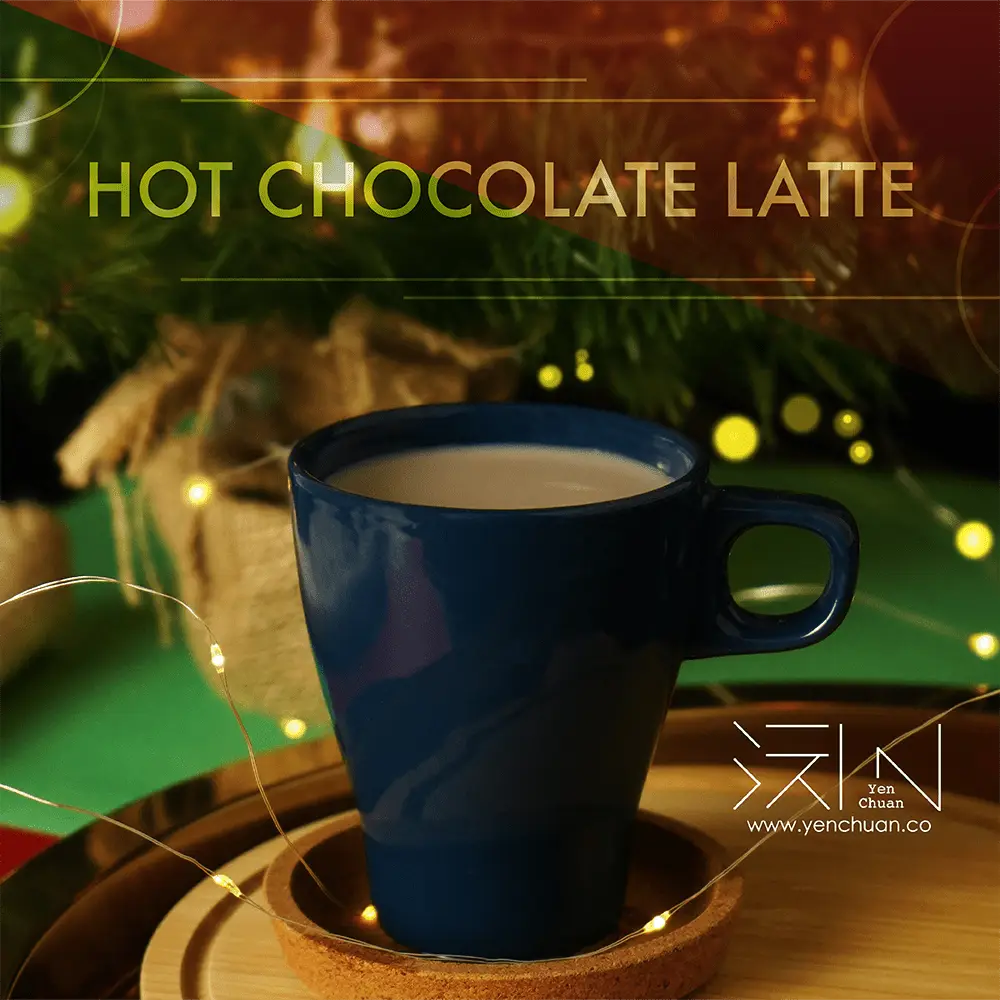

Articles / Recipes
Wrap up warm with delicious chocolate latte!
2022-12-08 · News, Recipes

Original public content from Yen Chuan. Product claims and specifications remain subject to confirmation by the company.
As the winter chill seeps through the windows, nothing warms you more than wrapping yourself in blankets in front of the fireplace, with a mug of warm chocolate in your hands. Hot chocolate latte is a classic comfort drink that feeds the soul and makes your kitchen smell marvellous!
Enjoy hot chocolate!
Want to warm up in a chilly afternoon or cold winter night, but getting tired of regular hot coffee? Give yourself a dose of nostalgia with hot chocolate latte! It’s the perfect dose of feel-good energy, and one of the best parts of the holiday season.
Curling up with a Christmas movie and a mug of hot chocolate latte to keep you company, while daydreaming about the pile Christmas presents to unwrap… Winter only lasts for a few months, so why not give yourself a sweet, warming treat with some classic winter drinks?
Give it a Christmas Boost!
Can’t get enough? Pair it with any Christmas dessert for the ultimate sweet ending to your holiday meal or weeknight dinner. With its rich, sweet taste, hot chocolate helps to further bring out the natural flavors of gingerbread cookies, red velvet cake, and Christmas candy!
You’ll have the perfect winter treat in no time with a sip of this creamy, chocolaty delight.
Just follow our easy instructions!
Bon Appetit!
Hot Chocolate Latte
End your meal with a decadent cup of richly flavored chocolate latte, the ULTIMATE cozy drink that everyone will love!
What you’ll need
How to make
Fill the glass with hot water and chocolate syrup. Stir well.
Pour in hot milk
Enjoy!
Quick Tip: Feeling fancy? (as you should), add a splash of half-and-half or heavy cream just before serving
Time to indulge in a homemade hot chocolate latte! Spice up your drink with a pinch of chili, cinnamon, or a slug of rum if you find yourself hankering for a slightly more grown-up twist on the classic sip.